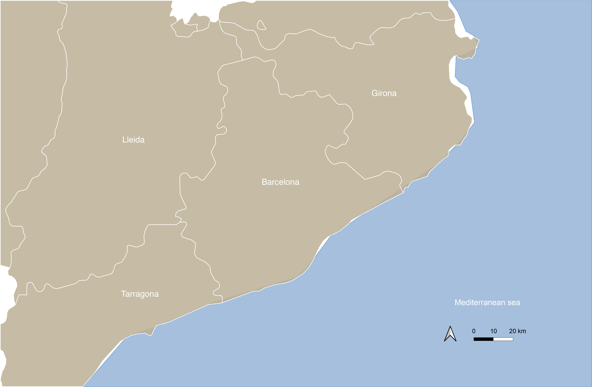

Every summer, millions of people flock to Catalonia’s coastline in search of sun, sand, and sea. But behind the idyllic postcards lies a stark and often overlooked reality: each year, dozens of lives are lost to drowning. These incidents rarely make headlines beyond a brief mention, leaving the scale of the tragedy hidden from public view.
This project brings together the most comprehensive dataset ever compiled on drownings along Catalonia’s beaches. Using official records, local news, and field reports, it documents when, where, and under what circumstances these deaths occur. The goal is simple: to make the invisible visible—so that policymakers, lifeguards, and the public can better understand the patterns, risks, and human cost of our summers by the sea.

This is the entire Catalan coast — 580 kilometers of Mediterranean shoreline stretching from the French border to the Ebro Delta.
But this same coastline took lives this summer.
Drownings occurred on beaches spanning from Barcelona in the south to Sant Pere Pescador in the north.
In just the past month, several people drowned here — locals, tourists, swimmers, and elders.
Different places. The same silence after the waves.
13 drownings occurred over one month along the Catalan coast.
Most victims were men; ages ranged from 18 to 82.
Several drownings occurred when no surveillance was present or after guards had ended their shift.
In deed, every year happens the same
An analysis of the 13 drowning cases in Catalonia during the summer of 2025 reveals a clear pattern: most incidents occurred in the late afternoon and evening, particularly after 5 p.m., when beach surveillance often ends.
Nearly half of the drownings happened either at unsupervised beaches or after lifeguards had left, and in several cases, no flag or an "out of service" flag was displayed — highlighting gaps in warning systems during off-hours.
Surprisingly, 6 victims drowned under a green flag, suggesting that calm sea conditions alone don’t guarantee safety. These patterns point to a critical risk period at the end of the day and underscore the dangers posed by insufficient surveillance and ambiguous flag signaling.
Even Green Flags Aren’t Risk-Free: Most Drownings Occur Despite Lifeguard Surveillance
Data from all beach safety records show that green and yellow flags—usually signals of active lifeguard surveillance—where present in 138 drowns, with 104 and 34 respectively.
Yet, paradoxically, most drownings occurred with green or yellow flags — meaning swimming was allowed. Meanwhile, beaches with no flag almost always lack lifeguard presence.
The dataset reveals a critical insight: flag colors indicate supervision, but they don’t eliminate risk.
However, many others occurred without surveillance, particularly early or late in the season.
The graphic shows the surprising truth: most drownings happened under surveillance and a green flag
Who is the Drowning Victim?
A man
Aged 60 or older
Primarily Spanish nationals
Other common nationalities: French, German, Belgian
Drowns even when swimming is allowed (green/yellow flag) or in areas with no surveillance
60 seconds. That’s all it takes.
...Now you know who he was. But 60 seconds weren’t enough to save him.
It can happen in silence, in shallow water, and in under a minute. Drowning doesn’t look like drowning.